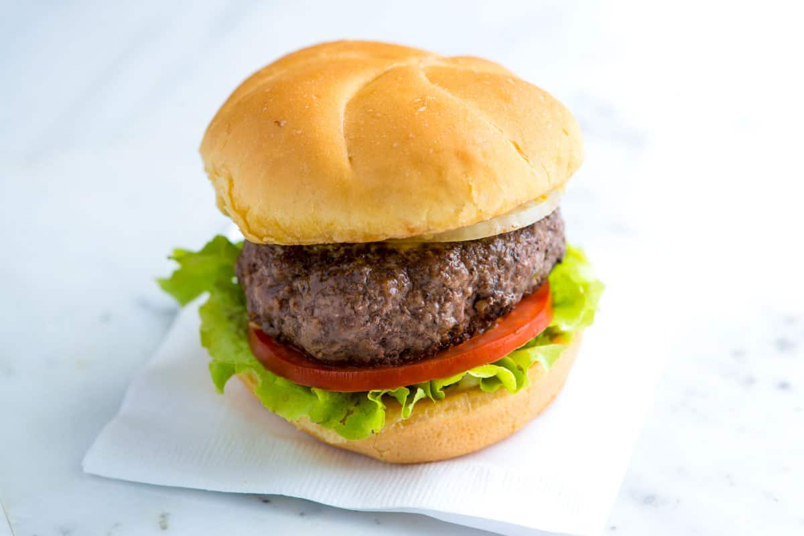

Burger

A simple take on an American classic
Ingredients
- 1 pound (450 grams) ground beef chuck or round
- Salt and fresh ground black pepper
- Butter
How To:
- Take the beef out of the refrigerator and allow it to sit at room temperature for about 5 minutes before forming the patties. Form beef into three 5 to 6 ounce hamburger patties. Use your thumb to imprint a dimple into the middle of each burger. (This prevents the middle of the burgers from puffing up while cooking). Season both sides of the hamburgers with salt and pepper.
- Melt 1 tablespoon of butter in a cast iron pan over medium heat. Cook hamburger patties 3 to 4 minutes on each side, depending on how well done you like it.
- Rest burgers covered loosely with aluminum foil for 5 minutes then serve on a buttered bun with lettuce, tomatoes and onion (or how you like it).
Return Home